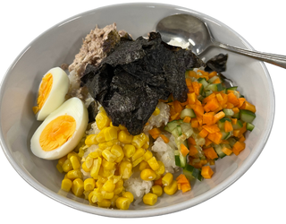
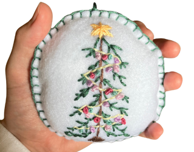

Selected design and teaching artefacts from my Bachelor of
Education and Design Innovation & Technologies
coursework.
Industrial Technology - Lamp Project
Laser-cut and 3D-printed carriage-lamp prototype.
A functional lamp designed in the shape of a princess
carriage. Combines laser cutting and 3D printing to
demonstrate form, precision, and user appeal.
A showcase of student work completed under my supervision
during teaching placements. Each project reflects
students' creativity, technical development, and
understanding of design principles within Technology and
Applied Studies (TAS).

Food Technology - Sushi Bowl
Year 9 Food for Specific Needs
Students designed and prepared balanced sushi bowls that
demonstrated food presentation skills, hygiene and safety
practices, and understanding of adolescent nutritional
needs. Assessment focused on creative plating and use of
fresh, seasonal ingredients.

Textiles Technology - Felt Christmas Decoration
Year 7 Introduction to Textiles
Students created hand-stitched felt Christmas decorations
to develop foundational sewing skills. The task introduced
design ideation, pattern cutting, safe hand-sewing
techniques, and decorative embellishment using sustainable
materials.
Food Technology - Chocolate and Pear Pudding
Year 8 Food for Special Occasions
Students produced a warm chocolate and pear pudding while
applying correct measurement, mixing, and baking
techniques. The project emphasised sensory evaluation,
teamwork, and confidence in following a detailed recipe to
a professional standard.
About These Projects
A mix of coursework artefacts and classroom outcomes that
reflect my growth as both a designer and a teacher.
Skills and Focus Areas
Product design and CAD
Textile construction
Food preparation and presentation
Student mentoring and feedback
Design thinking and sustainability
Teaching Approach
Combines creative problem-solving with hands-on learning and
real-world application across TAS subjects.